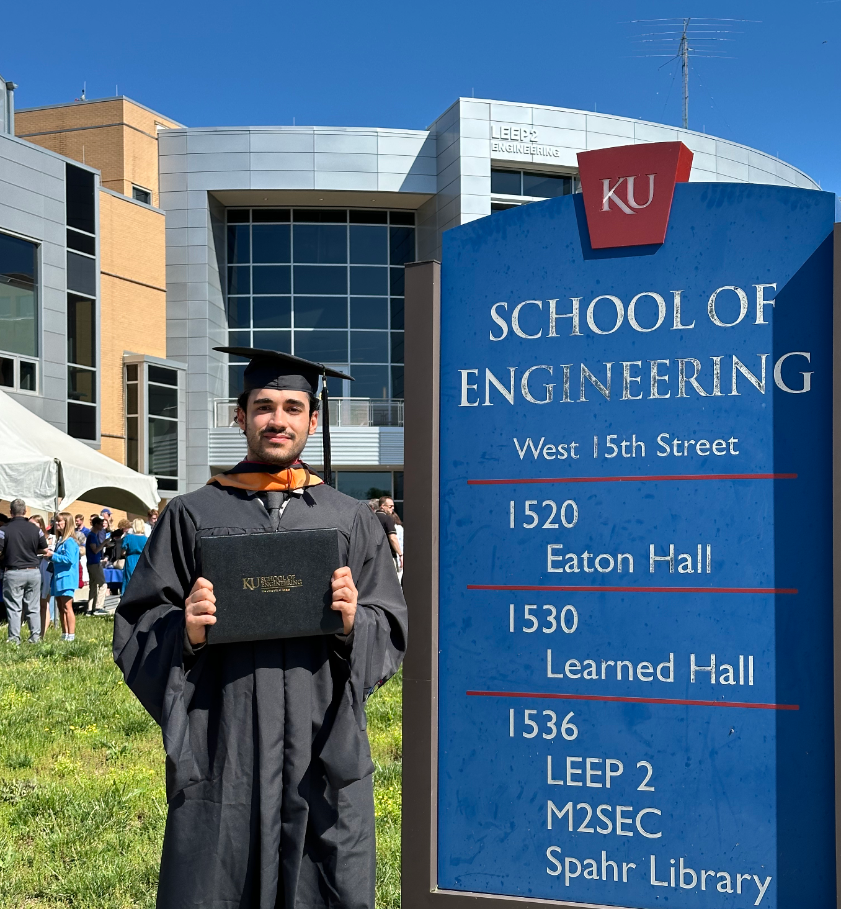
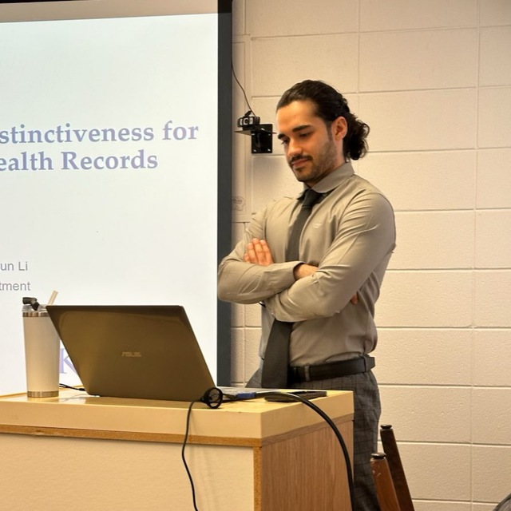
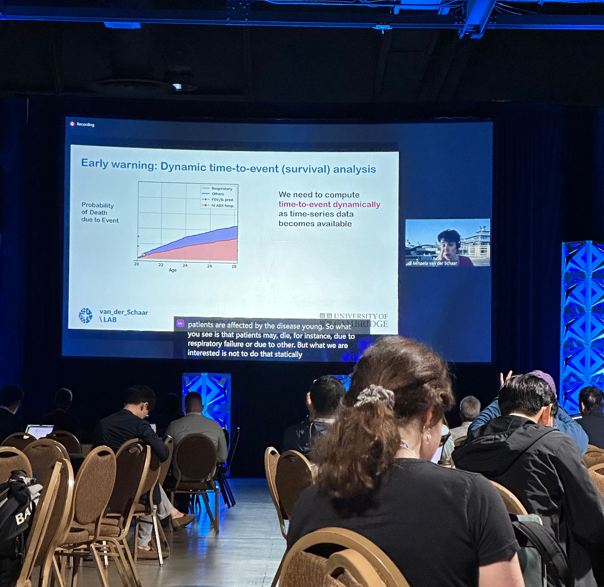

Mohsen Nayebi
About Me
I am a Ph.D. candidate in Computer Science at The University of Kansas (KU), focusing on health informatics within the Jayhawk Data Science Lab (JDSL), under the supervision of Dr. Zijun Yao. I began my Ph.D. in January 2022 and bring over 4 years of experience in data science and machine learning.
I hold a Master of Science in Computer Science from KU, where I graduated with a CGPA of 4.0, and a Bachelor's in Mechanical Engineering from Isfahan University of Technology (IUT), graduating with a CGPA of 3.82.
Research Interests: Data Mining, Knowledge Graphs, Large Language Models (LLMs), Time Series Analysis, Recommendation Systems, Natural Language Processing, Health Informatics.
I am actively seeking internship opportunities in data science and machine learning, where I can leverage my research expertise to solve real-world challenges.
Technical Skills
-
Machine Learning & AIDeep Learning (RNNS, CNNs, Transformers), Graph Neural Networks (GNN, GCN, GAT, Hypergraph Convolution, Hypergraph Attention, Hypergraph Transformer), Generative AI (GANs, Autoencoders), Large Language Models (Prompt Engineering, Embedding Retrieval Augmentation), Recommendation Systems, Adversarial Attacks/Counterfactual Explanations, Contrastive Learning, Transfer Learning, Meta Learning..
-
ProgrammingPython, SQL, Matlab.
-
Libraries & FrameworksPyTorch, TensorFlow/Keras, PyTorch Geometric, Python Visualization \& Data Analysis Libraries, Azure Databricks.
Projects
-
LLM-informed Ontology-aware Healthcare Representation Learning (2023)Graph-based attention model leverages Large Language Models to inject knowledge in health representation learning. Developed skills in Graph Neural Networks (GNN), attention mechanisms, and healthcare data representation. GitHub Repository
-
Contrastive Ontology-aware Healthcare Representation Learning (2023)Graph-based attention model meets contrastive learning to incorporate domain knowledge in representation learning. Gained expertise in contrastive loss functions, domain adaptation, and representation learning. GitHub Repository
-
Neural Program Synthesis-TransFill (2023)A transformer-based network is trained on input/output examples and learns to generate a program for string transformations. Developed skills in transformer architecture, program synthesis, and deep learning model training. GitHub Repository
-
Image Captioning (2023)Generating textual descriptions of images using a CNN-based encoder (ResNet50) and an attention-based LSTM decoder. Improved skills in computer vision, image processing, and natural language generation. GitHub Repository
-
Image Generation using GAN (2022)Using GANs for data augmentation and image-to-image translation ( Pix2Pix, CycleGAN). Gained hands-on experience with generative adversarial networks, image augmentation, and unsupervised learning. GitHub Repository
-
Write Shakespeare! (2022)Developed an LSTM-based NLP model trained on Shakespearean writings for generating text in Shakespearean style. Enhanced skills in natural language processing (NLP), sequence modeling, and text generation. GitHub Repository
-
Dynamic Analysis of Cellular Lattice Structures (B.S. Thesis) (2020)Dynamic Analysis of Cellular Structures under high strain rate using Finite Element Analysis (Abaqus) and Machine learning. Developed skills in finite element modeling, mechanical simulations, and applied machine learning. GitHub Repository
Publications
-
Adversarial Attack on Patient Survival Models with Counterfactual EHR PerturbationThrilled to share that our paper has been submitted to The Web Conference 2024. View Paper
-
Contrastive Learning of Temporal Distinctiveness for Survival Analysis in Electronic Health RecordsPublished in Association for Computing Machinery, CIKM 2023. View Paper
-
Discovering Time-Aware Dependency in Electronic Health Records through Personalized Hidden Graph InferenceWe are excited to announce that our paper has been submitted to The Web Conference 2024. View Paper
-
Enhancing Prediction of Subjective Measures via Attention-Based Patient Clustering: An Analysis of Patient-Reported Outcomes in Alzheimer's DiseaseOur paper is under review at AMIA 2024. View Paper
-
MetaGene: Meta-Learning for Enhanced Lung Cancer Detection with Gene Expression MicroarraysCurrently under review at AMIA 2024. View Paper
-
Recurrent Neural Networks and Attention Score for Personalized Prediction and Interpretation of Patient-Reported OutcomesSubmitted to The Journal of Biopharmaceutical Statistics 2024. View Paper
News
-
[01/2025]: A paper was accepted by the Journal of Biopharmaceutical Statistics.We are delighted to share that our paper "Recurrent Neural Networks and Attention Scores for Personalized Prediction and Interpretation of Patient-Reported Outcomes" is accepted at the Journal of Biopharmaceutical Statistics[11/2024]: A paper was accepted by TKDD.We are delighted to share that our paper "Discovering Time-Aware Hidden Dependencies with Personalized Graphical Structure in Electronic Health Records" is accepted at TKDD.[08/2024]: I have been honored with a Travel Award, recognizing my work and providing support for an upcoming event.We are delighted to share that our paper "Contrastive Learning on Medical Intents for Sequential Prescription Recommendation" is accepted at CIKM 2024.[07/2024]: A paper was accepted by CIKM 2024 (Full Research Paper track)!We are delighted to share that our paper "Contrastive Learning on Medical Intents for Sequential Prescription Recommendation" is accepted at CIKM 2024. View Paper[06/2024]: A paper was accepted by AMIA 2024!We are delighted to share that our paper "MetaGene: Meta-Learning for Enhanced Lung Cancer Detection with Gene Expression Microarrays" is accepted at AMIA 2024. View Paper[08/2023]: My very first paper was accepted by CIKM 2023 (Full Research Paper track)!Excited to share that our paper "Contrastive Learning of Temporal Distinctiveness for Survival Analysis in Electronic Health Records" has been published in Association for Computing Machinery, CIKM 2023. View Paper
Teaching
-
System Dynamics and Control Systems (ME 682) - Fall 2022Responsibilities: Explaining experiments to students, training them on lab instruments (e.g., Oscilloscope, FG, DMM, Power Supply), assisting with questions and troubleshooting, preparing instruments for each experiment, setting up model experiments, holding office hours, designing and grading tests, teaching Arduino programming, and recording training videos. View Class Video
-
Mechanical Engineering Measurements and Experimentation (ME 455) - Spring 2022Responsibilities: Teaching select lectures, grading assignments and exams, holding office hours. View Class Video
-
Advanced Data Science (EECS 700) - Fall 2022Responsibilities: Lecturing, holding office hours.
Graduating with my Master’s degree in Computer Science from the University of Kansas, School of Engineering
Presenting my master’s defense at the University of Kansas, discussing machine learning applications in healthcare.
KDD 2023.

KDD 2023.

KDD 2023 Expo.
Conquering Mount Elbert: A breathtaking journey to the summit of Colorado's highest peak.